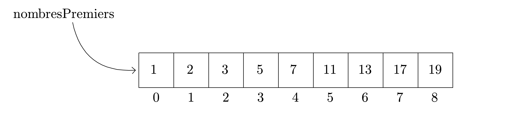

Chap. 08 — Structures de donnéesUn exemple de structure de données : les tableauxPrésentationExemple.Pourquoi le premier indice d'un tableau est-il souvent le 0 en informatique ?Catégorisation des structures de données de base du langage PythonCritères de catégorisationStockage des donnéesMise à jour de la structureMise à jour de la structureRésumé
Comme nous l'avons déjà vu, les données manipulées dans un programme sont localisées dans des zones réservées dans la mémoire centrale de l'ordinateur, repérées par les variables. Leur taille et leur codage dépendent du type de la variable1.
Les variables peuvent référencer des valeurs uniques mais aussi des structures beaucoup plus complexes, spécialisées dans le stockage ou l'organisation d'un plus grand nombre de valeurs.
L'objectif de ce chapitre est de dresser un panorama de quelques structures que l'on peut rencontrer en programmation.
En programmation, on parle de tableau (array en anglais) pour désigner un ensemble d'éléments contigus, de même type, repéré par un nom unique.
On peut donc rencontrer des tableaux d'entiers si ces derniers contiennent des entiers, des tableaux de float s'ils contiennent des nombres à virgule, des tableaux de caractères s'ils contiennent des caractères, etc.
Un tableau possède une ou des dimensions : un tableau à une dimension est un tableau ligne2 (ou colonne), un tableau à deux dimensions possède des lignes et des colonnes3, etc.
L'accès aux cases d'un tableau nécessite l'utilisation d'un indice : on parle de structure indexée.
La figure ci-dessous représente un tableau ligne de 9 éléments tous entiers. Il est référencé par la variable nombrePremiers. Les indices repérant les positions des différents éléments sont des entiers compris entre 0 et 8 (inclus).

La variable qui référence4 le tableau ne contient que l'adresse à laquelle se trouve la première case du tableau dans la mémoire vive de l'ordinateur. Comme un tableau n'est composé que de données de même type, occupant donc le même nombre d'octets en mémoire, il suffit
L'indice grâce auquel on peut accéder aux éléments d'un tableau représente le décalage depuis la première case du tableau.
Un tableau est une structure de données à allocation statique de la mémoire, ce qui signifie que la mémoire est réservée au lancement du programme une fois pour toutes.
Cette allocation statique possède l'avantage de réserver la place pour toutes les cases du tableau. Elle a l'inconvenient d'empêcher les dimensions d'un tableau de varier.
Un tableau est donc une structure de données dont la taille est définie lors de l'écriture du programme par le programmeur. Lors de l'exécution du programme, on ne peut que lire ou modifier les données stockées dans les différentes cases.
Le langage Python ne propose pas, par défaut, la structure de données tableau mais comprendre son fonctionnement pourra être utile par la suite, lorsque nous aborderons les structures proposées par Python.
Remarque. Cette section n'est pas obligatoire pour programmer en Python (d'autant plus que des structures non étudiées dans les prochains chapitres seront citées). Il me semble cependant important de bien comprendre quelles sont les similitudes et les différences des structures de données que l'on va étudier.
L'idée de cette partie est de faire émerger des critères qui vous permettrons, par la suite, de choisir la structure de données répondant le plus à vos besoins.
Ce critère correspond à la question : « Combien d'objets (ou données) la structure est-elle capable de stocker ? »
Remarque. Dans le cas du stockage composite, il peut être intéressant de se poser aussi la question : « Les objets stockés doivent-ils être de même type ? »
| Catégorie de modèle de stockage | Types Python entrant dans cette catégorie |
|---|---|
| Scalaire/atomique | Nombres (tous les types numériques), chaînes de caractères |
| Conteneur | Listes, tuples, dictionnaires, ensembles |
Ce critère correspond à la question : « Une fois créés, les objets peuvent-ils être modifiés ou leurs valeurs mises à jour ? »
| Catégorie de modèle de mise à jour | Types Python entrant dans cette catégorie |
|---|---|
| Modifiable | Listes, dictionnaires, ensembles (pour l'un des types) |
| Non modifiable | Nombres, chaînes, tuples, ensembles (pour l'un des types) |
Remarque. Ne pas confondre « modification d'un nombre » et « modification de la valeur référencée par une variable ». Les nombres ne sont pas des structures modifiables !
x
>>> x = 2>>> print(id(x))4297326656 # adresse de l'objet>>> x = x + 2>>> print(id(x))4297326720 # l'adresse n'est pas identique, c'est un nouvel objet # la variable référence un nouveau nombreMême expérience avec un objet modifiable :
x
>>> liste = [1, 2, 3] # création d'une liste contenant 3 entiers>>> print(id(liste))4379519880 # adresse en mémoire de la liste>>> liste.append(4) # on ajoute un élément à la liste>>> print(liste)[1, 2, 3, 4] # la liste a été modifiée>>> print(id(liste))4379519880 # l'adresse de la liste est identique. Même objetCe critère correspond à la question : « Une fois la structure créée, comment accède-t-on aux objets ? »
| Catégorie de modèle d'accès | Types Python entrant dans cette catégorie |
|---|---|
| Direct | Nombres, ensembles |
| Séquentiel | Chaînes, listes, tuples |
| Associatif | Dictionnaires |
| Type de donnée | Modèle de stockage | Modèle de mise à jour | Modèle d'accès |
|---|---|---|---|
| Nombre | Scalaire | Non modifiable | Direct |
| Chaînes de caractères | Scalaire | Non modifiable | Séquentiel |
| Listes | Conteneur | Modifiable | Séquentiel |
| Tuples | Conteneur | Non modifiable | Séquentiel |
| Dictionnaires | Conteneur | Modifiable | Associatif |
| Ensembles | Conteneur | Non et modifiable | Direct |
Vous devriez maintenant être capables de répondre à des questions telles que :